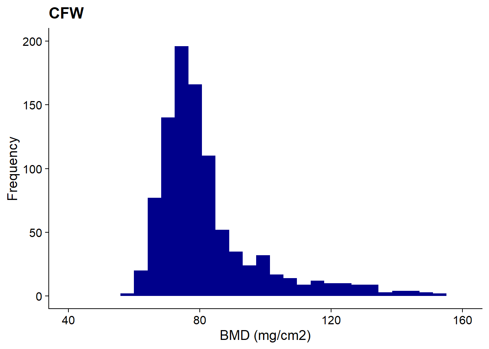
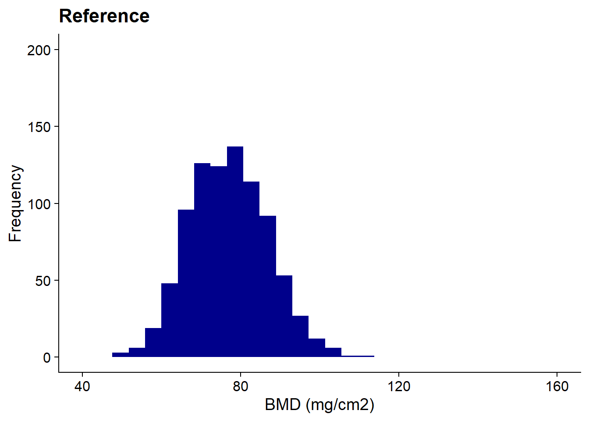
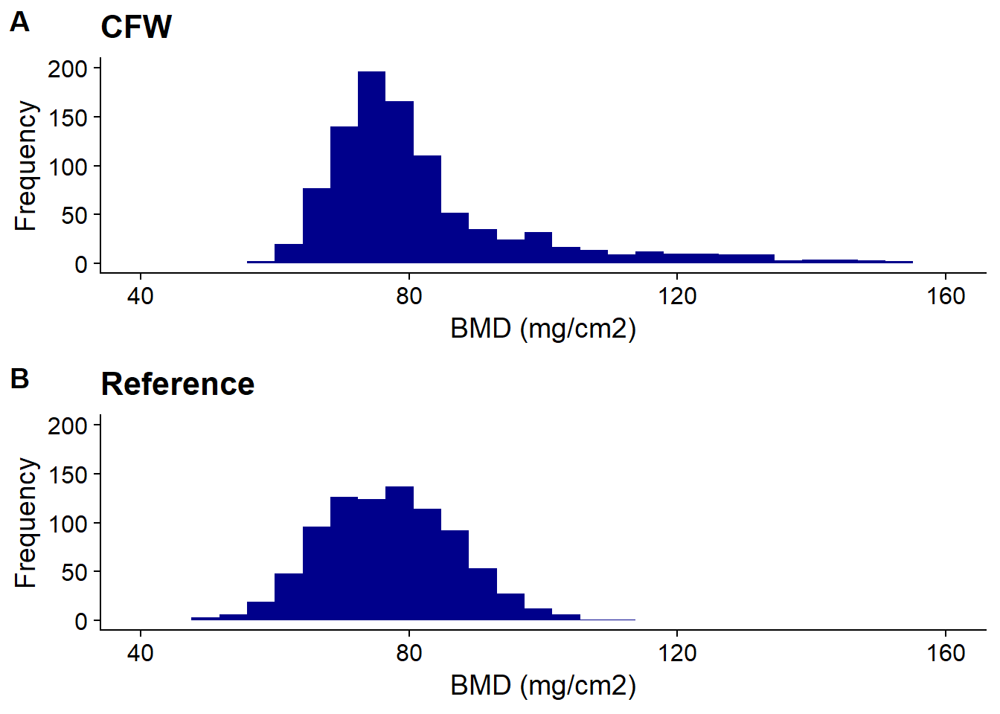

Last updated: 2020-09-16
Checks: 7 0
Knit directory: visualization/
This reproducible R Markdown analysis was created with workflowr (version 1.6.2). The Checks tab describes the reproducibility checks that were applied when the results were created. The Past versions tab lists the development history.
Great! Since the R Markdown file has been committed to the Git repository, you know the exact version of the code that produced these results.
Great job! The global environment was empty. Objects defined in the global environment can affect the analysis in your R Markdown file in unknown ways. For reproduciblity it’s best to always run the code in an empty environment.
The command set.seed(20200916) was run prior to running the code in the R Markdown file. Setting a seed ensures that any results that rely on randomness, e.g. subsampling or permutations, are reproducible.
Great job! Recording the operating system, R version, and package versions is critical for reproducibility.
Nice! There were no cached chunks for this analysis, so you can be confident that you successfully produced the results during this run.
Great job! Using relative paths to the files within your workflowr project makes it easier to run your code on other machines.
Great! You are using Git for version control. Tracking code development and connecting the code version to the results is critical for reproducibility.
The results in this page were generated with repository version 511469d. See the Past versions tab to see a history of the changes made to the R Markdown and HTML files.
Note that you need to be careful to ensure that all relevant files for the analysis have been committed to Git prior to generating the results (you can use wflow_publish or wflow_git_commit). workflowr only checks the R Markdown file, but you know if there are other scripts or data files that it depends on. Below is the status of the Git repository when the results were generated:
Ignored files:
Ignored: .Rhistory
Ignored: .Rproj.user/
Untracked files:
Untracked: PartB_histogram.pdf
Untracked: scatter_plot.pdf
Untracked: vis_PartB.png
Note that any generated files, e.g. HTML, png, CSS, etc., are not included in this status report because it is ok for generated content to have uncommitted changes.
These are the previous versions of the repository in which changes were made to the R Markdown (analysis/vis_challenge_partB.Rmd) and HTML (docs/vis_challenge_partB.html) files. If you’ve configured a remote Git repository (see ?wflow_git_remote), click on the hyperlinks in the table below to view the files as they were in that past version.
| File | Version | Author | Date | Message |
|---|---|---|---|---|
| Rmd | 511469d | KiseokUchicago | 2020-09-16 | update |
# load libraries
library(ggplot2)
library(cowplot)
library(ggrepel)
library(htmlwidgets)
library(plotly)
다음의 패키지를 부착합니다: 'plotly'The following object is masked from 'package:ggplot2':
last_plotThe following object is masked from 'package:stats':
filterThe following object is masked from 'package:graphics':
layout# Import data
# Import pheno.csv
# Read the phenotype data from the CSV file.
pheno <- read.csv("data/pheno.csv",quote = "",check.names = FALSE,
stringsAsFactors = FALSE)
# Remove the data from the methamphetamine sensitivity testing, since
# these data will not be used in the programming challenge. Also, most
# of the data from the prepulse inhibition tests will not be used, so
# we can remove those columns as well.
pheno <- pheno[c(1:38,65:67)]
# Convert some of the columns to factors.
pheno <- transform(pheno,
id = as.character(id),
round = factor(round,paste0("SW",1:25)),
FCbox = factor(FCbox),
PPIbox = factor(PPIbox),
methcage = factor(methcage),
methcycle = factor(methcycle),
discard = factor(discard),
mixup = factor(mixup),
earpunch = factor(earpunch),
abnormalbone = factor(abnormalbone),
experimenters = factor(experimenters))
# Convert the "fasting glucose" column to double precision.
pheno <- transform(pheno,fastglucose = as.double(fastglucose))
# Remove rows marked as "discard" and as possible sample mixups.
pheno <- subset(pheno,discard == "no" & mixup == "no")
hmdp <- read.csv("data/hmdp.csv", stringsAsFactors = FALSE)
gwscan <- read.csv("data/gwscan.csv", stringsAsFactors = FALSE)
gwscan <- transform(gwscan, chr = factor(chr, 1:19))
geno <- read.csv("data/geno_rs29477109.csv", stringsAsFactors = FALSE)
geno <- transform(geno, id = as.character(id))head(pheno) id round cageid FCbox PPIbox methcage methcycle discard mixup earpunch
1 4368 <NA> NA <NA> <NA> <NA> <NA> no no <NA>
2 26305 SW18 1330002 1 1 1 1 no no R
3 26306 SW18 1330002 2 3 2 1 no no R
4 26307 SW18 1330002 3 4 3 1 no no L
5 26308 SW18 1330002 4 5 4 1 no no L
6 26309 SW18 1330003 1 1 5 1 no no R
glucoseage methage FCage PPIage sacage bw0 bw1 bw2 bw3 PPIweight
1 NA NA NA NA NA NA NA NA NA NA
2 46 54 62 76 91 38.7 41.0 41.3 41.6 45.7
3 46 54 62 76 91 29.1 29.8 31.0 30.6 35.0
4 46 54 62 76 91 28.2 28.7 28.4 29.0 32.2
5 46 54 62 76 91 27.7 30.6 31.5 30.4 37.5
6 46 54 62 76 91 29.1 31.8 32.0 31.9 37.7
sacweight BMD TA EDL gastroc plantaris soleus tibia abnormalbone
1 NA NA NA NA NA NA NA NA <NA>
2 46.6 83.1 74.6 16.9 194.8 23.2 15.0 19.05 0
3 35.7 75.3 62.3 13.2 154.6 18.8 8.5 18.06 0
4 34.1 77.7 54.1 11.2 143.6 17.6 6.8 18.14 0
5 41.8 89.7 56.5 12.9 148.6 17.7 8.7 18.18 0
6 39.5 83.3 64.0 14.1 157.4 20.6 9.2 18.35 0
experimenters testisweight taillength fastglucose PreTrainD1 AvToneD1
1 <NA> NA NA NA NA NA
2 ALwithSL 0.1396 9.7 132 0.0000 0.0044
3 ALwithSL 0.1692 9.0 140 0.0302 0.0310
4 ASLwithSL 0.1878 8.5 112 0.0000 0.0111
5 ALwithSL 0.2002 9.0 134 0.0142 0.0245
6 ASLwithSL 0.1875 9.0 95 0.0000 0.0022
AvContextD2 AvAltContextD3 AvToneD3 PPIavg startle avgnostim
1 NA NA NA NA NA NA
2 0.0089 0.0000 0.0000 0.4602 146.08 9.13
3 0.0657 0.0000 0.0000 0.1672 126.83 7.13
4 0.0018 0.0000 0.0000 0.5582 273.33 4.38
5 0.0036 0.0000 0.0000 0.7840 165.42 5.25
6 0.0708 0.0018 0.0312 -0.1998 12.08 6.00colnames(pheno) [1] "id" "round" "cageid" "FCbox"
[5] "PPIbox" "methcage" "methcycle" "discard"
[9] "mixup" "earpunch" "glucoseage" "methage"
[13] "FCage" "PPIage" "sacage" "bw0"
[17] "bw1" "bw2" "bw3" "PPIweight"
[21] "sacweight" "BMD" "TA" "EDL"
[25] "gastroc" "plantaris" "soleus" "tibia"
[29] "abnormalbone" "experimenters" "testisweight" "taillength"
[33] "fastglucose" "PreTrainD1" "AvToneD1" "AvContextD2"
[37] "AvAltContextD3" "AvToneD3" "PPIavg" "startle"
[41] "avgnostim" p_bmd <- ggplot(pheno, aes_string(x='BMD')) +
geom_histogram(fill='darkblue') +
xlim(c(40,160)) +
ylim(c(0,200)) +
labs(x= 'BMD (mg/cm2)', y= 'Frequency', title = "CFW") +
theme_cowplot()
p_bmd`stat_bin()` using `bins = 30`. Pick better value with `binwidth`.Warning: Removed 132 rows containing non-finite values (stat_bin).Warning: Removed 2 rows containing missing values (geom_bar).
# get only the male
head(hmdp) strain id sex totalbody femur spine
1 129X1/SvJ 129X1_10 M 0.0549 0.0925 0.0695
2 129X1/SvJ 129X1_4 M 0.0554 0.0911 0.0634
3 129X1/SvJ 129X1_7 M 0.0540 0.0905 0.0688
4 129X1/SvJ 129X1_12 M 0.0555 0.0896 0.0721
5 129X1/SvJ 129X1_11 M 0.0510 0.0876 0.0758
6 129X1/SvJ 129X1_1 M 0.0579 0.0906 0.0665unique(hmdp$sex)[1] "M"# hmdp[hmdp$sex == 'M',]
# get the unit equal
hmdp <- hmdp %>% filter(sex == 'M') %>% mutate(femur_mg = femur *1000)
# hmdp$femur_mg <- hmdp$femur * 1000
p_bmd2 <- ggplot(hmdp, aes_string(x='femur_mg')) +
geom_histogram(fill='darkblue') +
xlim(c(40,160)) +
ylim(c(0,200)) +
labs(x= 'BMD (mg/cm2)', y= 'Frequency', title = "Reference") +
theme_cowplot()
p_bmd2`stat_bin()` using `bins = 30`. Pick better value with `binwidth`.Warning: Removed 13 rows containing non-finite values (stat_bin).Warning: Removed 2 rows containing missing values (geom_bar).
plot_grid(
p_bmd, p_bmd2,
labels = "AUTO", ncol = 1
)`stat_bin()` using `bins = 30`. Pick better value with `binwidth`.Warning: Removed 132 rows containing non-finite values (stat_bin).
Warning: Removed 2 rows containing missing values (geom_bar).`stat_bin()` using `bins = 30`. Pick better value with `binwidth`.Warning: Removed 13 rows containing non-finite values (stat_bin).
Warning: Removed 2 rows containing missing values (geom_bar).
sessionInfo()R version 4.0.2 (2020-06-22)
Platform: x86_64-w64-mingw32/x64 (64-bit)
Running under: Windows 10 x64 (build 18363)
Matrix products: default
locale:
[1] LC_COLLATE=Korean_Korea.949 LC_CTYPE=Korean_Korea.949
[3] LC_MONETARY=Korean_Korea.949 LC_NUMERIC=C
[5] LC_TIME=Korean_Korea.949
attached base packages:
[1] stats graphics grDevices utils datasets methods base
other attached packages:
[1] plotly_4.9.2.1 htmlwidgets_1.5.1 ggrepel_0.8.2 cowplot_1.1.0
[5] ggplot2_3.3.2 workflowr_1.6.2
loaded via a namespace (and not attached):
[1] Rcpp_1.0.5 pillar_1.4.6 compiler_4.0.2 later_1.1.0.1
[5] git2r_0.27.1 tools_4.0.2 digest_0.6.25 viridisLite_0.3.0
[9] jsonlite_1.7.0 evaluate_0.14 lifecycle_0.2.0 tibble_3.0.3
[13] gtable_0.3.0 pkgconfig_2.0.3 rlang_0.4.7 rstudioapi_0.11
[17] yaml_2.2.1 xfun_0.16 httr_1.4.2 withr_2.2.0
[21] stringr_1.4.0 dplyr_1.0.1 knitr_1.29 generics_0.0.2
[25] fs_1.5.0 vctrs_0.3.2 tidyselect_1.1.0 rprojroot_1.3-2
[29] grid_4.0.2 data.table_1.13.0 glue_1.4.2 R6_2.4.1
[33] rmarkdown_2.3 farver_2.0.3 tidyr_1.1.1 purrr_0.3.4
[37] magrittr_1.5 whisker_0.4 backports_1.1.7 scales_1.1.1
[41] promises_1.1.1 ellipsis_0.3.1 htmltools_0.5.0 colorspace_1.4-1
[45] httpuv_1.5.4 labeling_0.3 stringi_1.5.3 lazyeval_0.2.2
[49] munsell_0.5.0 crayon_1.3.4